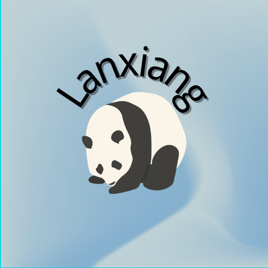
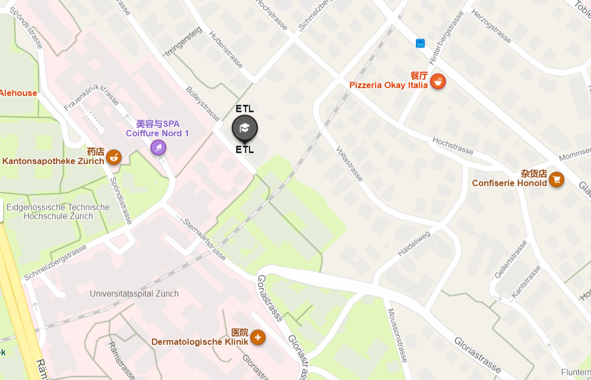

A good institution focused on education
ICTs are used for economic, social and interpersonal interaction. ICTs have dramatically changed the way people work, communicate, learn and live. In addition, ICTs continue to revolutionize all parts of the human experience into the first computers, and now robots once handle many of the tasks of humans. For example, once the computer answers the call and directs the call to the appropriate personal response; Bots can now not only answer calls, but also process callers' service requests more quickly and efficiently.
